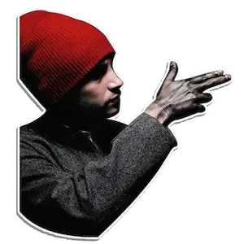

O álbum conceitual apresenta um personagem chamado de Blurryface, algo como rosto embaçado em português. E esse personagem é basicamente a manifestação do lado sombrio de Tyler Joseph, que se deixa dominar por seus medos e inseguranças, algo que podemos nos identificar facilmente.
Bem-vindo
twenty one pilots
Twenty One Pilots (estilizado como TWENTY ØNE PILØTS e abreviado como TØP) é um duo norte americano que se originou na cidade de Ohio, Columbus. A banda foi formada em 2009 e é composta pelos integrantes Tyler Joseph e Josh Dun.

Cause sometimes to stay a live you gotta kill your mind!